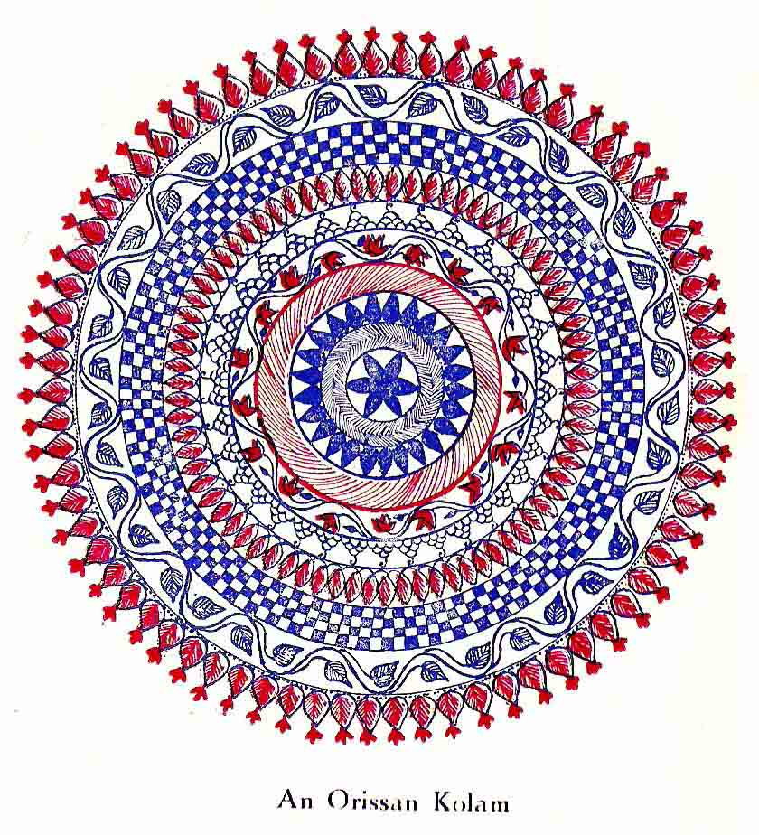
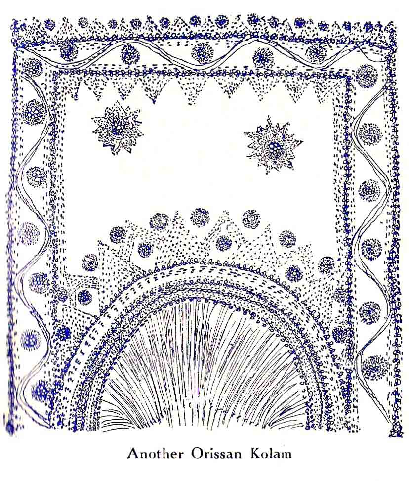

Folk-Art in India
By JAMES H. COUSINS, D. LITT.

One of the most pleasing and distinctive features of the life of the people of India is the domestic art that is called to the service of religious devotion and of family needs, such as seasonal ceremonials, which, though predominantly social, are never quite removed from the religious influence.
Walking along a street in the Indian residential quarters of a city or in any Indian, town or village, the eye is challenged by figures of a geometrical kind in white lines in front a doorway, and by coloured designs on the doorposts. Some Indian housewife has set out the lure of beauty for celestial feet. Lakshmi Devi, who radiates good fortune, will pass that way (once a week, perhaps, as a matter of routine, and at festive times in state), and must not fail of an invitation to enter the swept and garnished home.
This very beautiful association of religion and art is observed by the open-eyed traveller to prevail in all parts of India; and an attentive examination of the designs will show that, while their purpose and general effect are everywhere the same, there are most interesting variations in the character of the designs, from the interlaced lines of the kolam of Madras to the fluid masses of alpana in Bengal. A collection of these from the different areas of India, would provide materials for not only a delightful study of folk-art but also of the diversity of ways in which racial and temperamental varieties express themselves.
It is held by students of the culture of India that this domestic art is the lineal descendant of the wall-paintings of the era whose influence in art spread far beyond its northernmost extant remnant at Bagh in Gwalior State and its southernmost remnant recently discovered at Sittanawasal in Madras Presidency. The great classical mural art of the sixth and preceding centuries of our era, of which these and the gallery at Ajanta in Hyderabad State are the remainders, was not confined to sacred places. From palace to cottage there was, in varying degree of mastery and elaborateness, the aesthetical accompaniment to religious devotion.
The subsequent disappearance of Buddhism, the emergence of modern Hinduism with its emphasis on sculpture, invasions from western Asia, and social changes, affected the art of painting. The great centres of artistic influence ultimately broke up. Artists, turning to other means of livelihood, transmitted their ancient skill with attenuated power; and at last the creative desire that had painted the wonderful ceilings of the excavated temples to stand for fifteen centuries, found itself on the floor tracing designs in rice powder for the purposes of a day and a night. Another change had taken place. Although in Indian tradition the origination of portraiture is attributed, according to one account, to Brahma the Creator, according to another to a woman, it is taken for granted that the artists of India were chiefly men. But the folk-art of to-day is entirely in the hands of the Indian women, and no one can say with certainty when or where the transfer took place. There are certain elements in human culture, such as metaphysical conceptions of the nature of the universe and humanity, which may well have arisen independently in a number of places; but the universality and affinity of this art in Indian home-life would suggest a central impulse and sanction at a time sufficiently far back to allow of the spread of the art to its present area. The problem is a nice one for scholars and lovers of art.

An article on the kolam of south India in the Madras Mail Annual of 1925 gave an excellent idea of that particular variation. The two examples of the same art here given are from Orissa. Some alpanas, with their massiveness and energy, make an interesting comparison with the thinner and more geometrically linear art of the South. There is a difference also in their technique. In Madras the kolam is laid down with rice powder run through the fingers of the lady artists, with rhythmical sweeps of the arm. A few points mark out the area of the design that is to be used, but the laying down is spontaneous and without mechanical assistance. There is the same spontaneity in Bengal, but in the heavier designs the powder is wet and laid on with the fingers. The design is adapted to the available space on wall or floor, and to the position of the ceremonial centre point. Its details reflect the occasion – a festival of Lakshmi when foot-prints in the design suggest her approach to the dwelling; a harvest thanksgiving, when growing paddy and garnered rice are the basis of the design; a rain festival, when the queen of water-plants, the lotus, appears. In many of the designs, probably in all, are seen some constants, such as scrolls based on conventionalised leaves and flowers on a serpentine stalk, which are regarded as the ancestral mark, since they are closely related to the same elements in the mural decorations of Ajanta and Bagh, and are traditionally inherent in the art, not superadded from recent interest in the classical background of Indian painting.